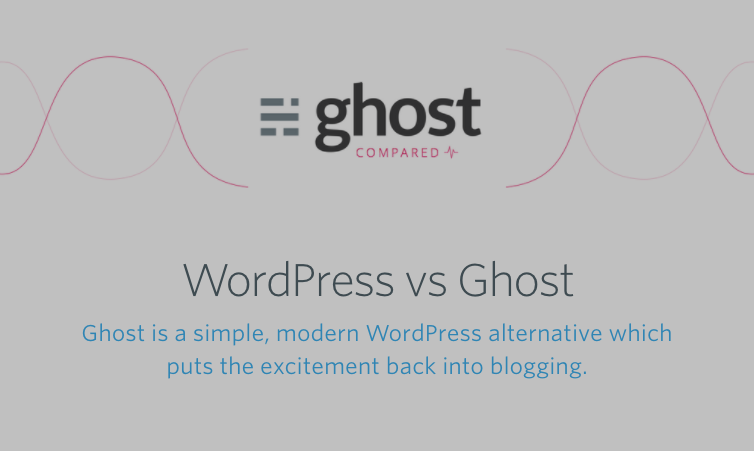

CONCISELY
Ghost Rewrites
1. Homepage (ghost.org)
Current Copy (Visual)
CONCISELY Rewrite (Visual)
Current Copy (Text)
The professional publishing platform
Ghost is a fully open source, hackable platform for building and running a modern online publication. We power blogs, magazines and journalists from Zappos to Sky News.
CONCISELY Rewrite (Text)
Professional publishing
Ghost is an open-source, non-profit publishing platform. We power 1.3 million blogs, magazines, and journalists inclusing Zappos, NASA, and Sky News.
Rewrite Notes
- Optimise heading — shortened from 4 words and 10 syllables to 2 words and 7 syllables
- Optimise lead sentence — shortened from 16 words and 28 syllables to 9 words and 14 syllables.
- Remove ‘fully’ — it’s an adverb; it’s unnecessary: fully unnecessary.
- Remove ‘hackable’ — a confusing and redundant word: privacy, security, and trust are paramount to the media, publishing, and corporate worlds and the word ‘hackable’ — which can also mean ‘easy to hack [into]‘— can be grossly misinterpreted by non-tech readers. Meanwhile tech savvy readers already understand ‘open source’ to generally be ‘hackable’ [in the correct context] so with ‘open source’ already present in the copy ‘hackable’ is unnecessary. And risky.
- Add ‘non-profit’ — Ghost has been proudly non-profit since inception, a point that’s prioritized across the Ghost website. There’s no prouder place that bang-smack in the first sentence of the homepage value prop.
- Add ‘1.3 million’ — the power count is an impressive number that reinforces all manner of confidence, stability, authority, and professionalism. And it’s only going to keep growing.
- Add ‘NASA’ — An extra name-drop like NASA is impressive point that reinforces all manner of confidence, stability, authority, and professionalism.
2. vs WordPress (ghost.org/vs/wordpress)
Current Copy (Visual)

CONCISELY Rewrite (Visual)
Current Copy (Text)
WordPress vs Ghost
Ghost is a simple, modern WordPress alternative which puts the excitement back into blogging.
1. Ghost is much more simple
2. Ghost has SEO & social built-in
3. Ghost is way easier to set up
4. Ghost is faster
5. Ghost is more affordable
CONCISELY Rewrite (Text)
Ghost vs WordPress
Ghost is simpler, smarter, faster, easier, and cheaper than WordPress.
1. Ghost is simpler
2. Ghost is smarter
3. Ghost is easier
4. Ghost is faster
5. Ghost is cheaper
Rewrite Notes
- Put Ghost first — Change heading from ‘WordPress vs Ghost’ to ‘Ghost vs WordPress’. Ghost should always come first.
- Simplify sub-heading — Change ‘much more simpler’ to ‘simple’, ‘way easier’ to ‘easier’, etc. Because: irony.
- Simple, memorable, repeatable V’s points — Skimming is the new reading and headings are the new copy: if the headings don’t captivate the copy is already dead. By simplifying the sub-heading with concise keywords these 5 primary points — simpler, smarter, faster, easier, and cheaper — are reinforced by repetition and context in the detailed explanations further down the page. And honestly, the current copy “Ghost is much more simple” is fit for a WordPress page…
Home ·
About · Contact